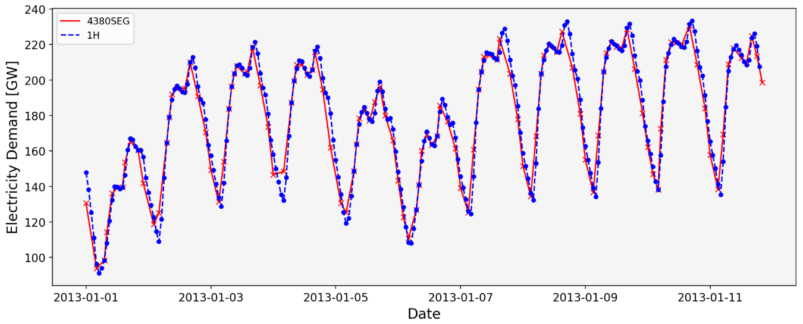

Segmentation Temporal Clustering#
There are different options available in PyPSA-Eur to cluster temporally:
xH: Resampling the time resolution of an optimisation year by averaging every given number of time steps (x) to one.
ySEG: The alternative is the segmentation option, where time series segmentation is applied, creating a specified number of segments (y) of different lengths using a clustering algorithm. These segments consist of adjacent time steps that show similar characteristics based on capacity factors of intermittent renewables, hydro inflow and load.
For example, using 4380SEG corresponds to an average temporal resolution of 2H.
The advantages of using ySEG:
Higher resolution during hours of higher variability (e.g. during the day) with lower resolution during hours of less variability (e.g. during the night).
Proven in previous studies as good compromise between computational time and accuracy of results.
Here are the comparison of metrics in past results:
Temporal Resolution |
Total System Cost [bEUR] |
Curtailment [TWh] |
CO2 price [EUR/tCO2] |
Installed Iron-Air capacity [GW] |
Computational time |
|---|---|---|---|---|---|
1H |
399.7 |
519.00 |
438.01 |
10.3 |
~12h |
4380SEG (2H) |
400.3 |
519.00 |
435.48 |
10.0 |
~4h |
2920SEG (3H) |
400.0 |
515.00 |
437.12 |
10.8 |
~3h |
Here are the comparison of load time series using 4380SEG:
